$\mathcal{T} = (\mathbf{\Delta},\Phi)$
$\mathbf{\Delta}$ is a disjoint union of linear tetrahedra
$\Phi$ is a collection of isomorphisms of pairs of triangular faces
William Hobkirk
The University of Sydney
Geometry and Topology Seminar · 14/10/2026
$\mathcal{T} = (\mathbf{\Delta},\Phi)$
$\mathbf{\Delta}$ is a disjoint union of linear tetrahedra
$\Phi$ is a collection of isomorphisms of pairs of triangular faces

Definition
Let $M$ be a $3$-manifold. The complexity $c(M)$ of $M$ is the minimal $n$ such that $\exists \mathcal{T}, |\mathcal{T}|=M$ with $n$ tetrahedra.
Minimal triangulations are triangulations that obtain this minimum.
Theorem 6.1, Jaco and Rubinstein (2002)
If $M$ is closed, orientable and irreducible and $M\not\in \{S^3, \mathbb{R}\mathrm{P}^3,L(3,1)\}$ then any minimal triangulation of $M$ must have a single vertex.
Orientable $3$-manifolds that admit genus $1$ Heegaard decompositions.
$L(p,q)$ is obtained by identifying two solid tori such that a meridional curve of one is identified with a $(p,q)$-torus knot on the boundary of the other.
The maximum Euler characteristic of a connected non-orientable surface embedded in $L(2n,1)$ is $2-n$.
Jaco, Rubinstein, Tillman (2008)
Proved using canonical non-orientable surfaces realising the non-trivial class of $H_2(L(2n,1);\mathbb{Z}_2) = \mathbb{Z}_2$.
Recipe:
The resulting space is a $\mathbb{Z}_3$-folded surface $X$.
$X$ has a fundamental class $[X] \in H_2(\mathbb{Z}_3)$ determined by the fundamental class $[X_{cut}]\in H_2(X_{cut},\partial X_{cut};\mathbb{Z})$.
If $X\subset M$ we say $X$ represents the image of $[X]$ in $H_2(M;\mathbb{Z}_3)$.
If $M$ is a compact orientable $3$-manifold then every class in $H_2(M;\mathbb{Z}_3)$ is represented by an embedded $\mathbb{Z}_3$-folded surface.
$\text{Sing}(X)$ is a circle
$\text{Int}(X)$ is an open disk
A function on homology that characterises how complicated the set of realisations of a $H_2(\mathbb{Z}_3)$ class is.
\[ ||x||_{\mathbb{Z}_3} := \max_{[X]=x} \sum_{X_0\in \pi_0(\text{Int}(X))} \max(-\chi(X_0),0)\]
Depend only on a triangulation $\mathcal{T}$ and a choice of cellular $\mathbb{Z}_3$ 1-cocycle $\varphi$ representing the dual $H^1(M;\mathbb{Z}_3)$ class.
When $\mathcal{T}$ has one vertex $S_{\varphi}(\mathcal{T})$ does not separate the ambient space.
$\chi_3(x)$ is the maximum Euler characteristic of a $\mathbb{Z}_3$-folded surface $X$ representing $x$ which does not separate the ambient space.
Lemma
If $M$ is a closed orientable $3$-manifold with $H_2(M;\mathbb{Z}_3)=\mathbb{Z}_3$ then $||x||_{\mathbb{Z}_3} = \max(0,-\chi_3(x))$.
Theorem: $\chi_3(x)=2-n$ for any $x \in H_2(L(3n,1);\mathbb{Z}_3) \setminus \{0\}$
Let $X$ be a $\mathbb{Z}_3$-folded surface of maximal Euler characteristic in $L(3n,1)$ with the property that $L(3n,1)\setminus X$ is connected.
Choose a genus $1$ Heegaard decomposition of $L(3n,1)$ that is "adapted" to $X$.
A Heegaard splitting of $L(3,1)$ that is adapted to a non-separating $\mathbb{Z}_3$-folded surface.
$\mathbb{Z}_3$-folded $1$-manifolds are the $1$-dimensional analogues of $\mathbb{Z}_3$-folded surfaces.
Meridional intersection patterns are $\mathbb{Z}_3$-folded $1$-manifolds properly embedded in a disk.
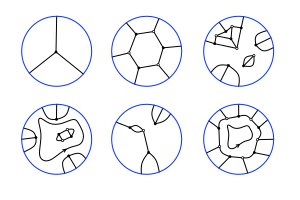
The compressing disk $D$ is embedded such that:
If $X$ is a non-separating $\mathbb{Z}_3$-folded surface of maximal Euler characteristic it follows that $\partial D$ bounds a disk in $\text{Int}(X)$
A disk compression followed by deletion of the separating $2$-sphere created.
The compressing disk $D$ is embedded such that:
If $X$ is a non-separating $\mathbb{Z}_3$-folded surface of maximal Euler characteristic it follows that there exists an interval $I$ in $\text{Sing}(X)$ such that the theta graph $I \cup \partial D$ bounds a pair of disks in $\text{Int}(X)$.
A $2$-compression followed by deletion of the bubble created.
Preserves the Euler characteristic and the property of not separating the ambient space.
The compressing disk $D$ is embedded such that:
We use the reduced compression surgeries to eliminate all bigons, quads and simple closed curves from the meridional intersection pattern.
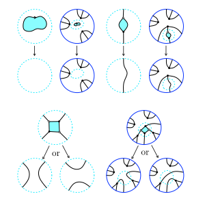
The resulting meridional intersection pattern must admit a subcomplex that looks like one of the following:
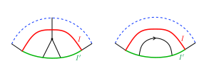
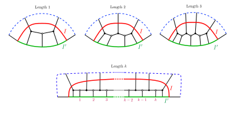
These subcomplexes allow us to reduce the number of meridional disks.
Repeat this process until we have only a single meridional disk in the intersection with the first solid torus.
Meridional intersection patterns can be further manipulated by performing ambient isotopies to the $\mathbb{Z}_3$-folded surface.
We simplify meridional intersection patterns further by combining these snake/finger moves with the reduced $4$-compression surgery.
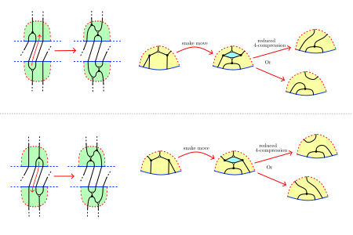
Minimal meridional intersection patterns always have at least one boundary tripod.
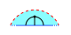
Cut the second solid torus along the meridional intersection disk. This gives us a $\mathbb{Z}_3$-folded surface with boundary properly embedded in a $3$-ball.
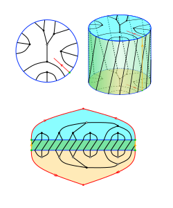
Boundary tripods imply the existence of bigons in the boundary pattern.
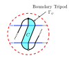
A cut and glue operation using this bigon and reduced $2$-compression yields a non-separating $\mathbb{Z}_3$-folded surface in $L(3(n-1),1)$ from one in $L(3n,1)$.
It follows that $\chi_3(L(3n,1))\leq \chi_3(L(3(n-1),1))-1$ for all $n>1$
We already know that $\chi_3(L(3,1))=1$ so $\chi_3(L(3n,1))\leq 2-n$.
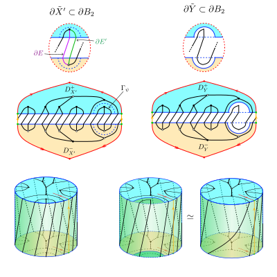
We will show that $\chi_3(L(3n,1))\geq 2-n$ by example.
Here is a family of particularly nice meridional intersection patterns.
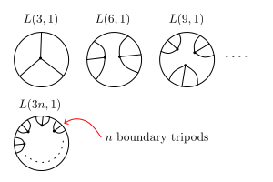
A family of non-separating $\mathbb{Z}_3$-folded surfaces with these meridional intersection patterns.
What does this have to do with triangulation complexity?
Fix a minimal one-vertex triangulation of $L(3n,1)$ and let $X$ be a canonical $\mathbb{Z}_3$-folded surface.
There are four ways $X$ can intersect a tetrahedron.
We can partition the edges into $\mathfrak{e}$ even edges and $\mathfrak{o}$ odd edges.
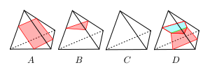
$X$ has the same Euler characteristic as its complement.
The complement of $X$ deformation retracts onto the subcomplex spanned by the even edges.
Hence $\chi(X) = 1 - \mathfrak{e} + \frac{B+4C}{2} - C$
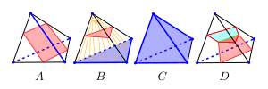
$X$ is non-separating since the triangulation has one vertex.
Hence $\chi(X) \leq \chi_3(L(3n,1))= 2-n$.
Moreover, $1-\mathfrak{e} \leq \chi(X)$ so $\mathfrak{e} \geq n-1$.
$\mathfrak{o}> 0$ since $X$ is non-empty.
$\mathfrak{o}= 1$ implies that a $\mathbb{Z}_3$-crosscap embeds in $L(3n,1)$.
But $\chi_3(L(3n,1)) = 2-n < 1$ (contradiction).
$\chi(L(3n,1))=0 = 1-\mathfrak{e}-\mathfrak{o} + \frac{4c(L(3n,1))}{2} - c(L(3n,1))$
Hence, $c(L(3n,1)) = \mathfrak{e}+\mathfrak{o} - 1$
Hence, $c(L(3n,1)) \geq n-1 +2 - 1 = n$
The minimal triangulations of $L(3n,1)$ are the minimal layered triangulations (conjecture of Jaco and Rubinstein, 2006).
This proof will be on Arxiv before the next batch of results from OpenAI.
William Hobkirk · william.hobkirk@sydney.edu.au